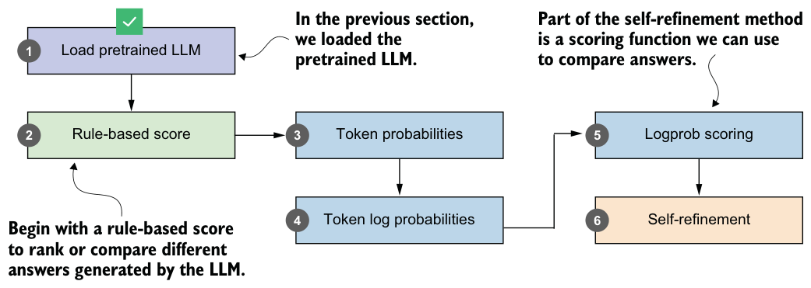
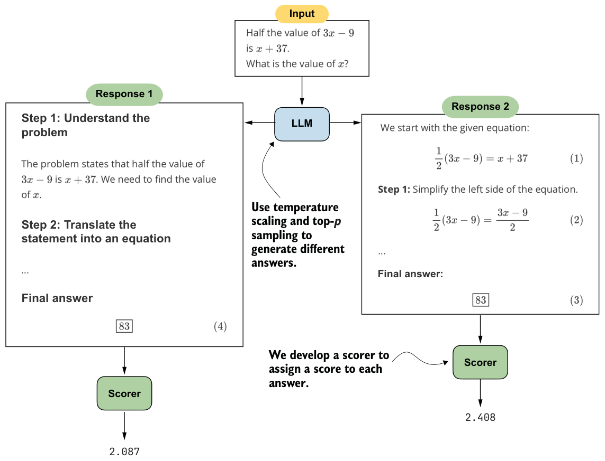
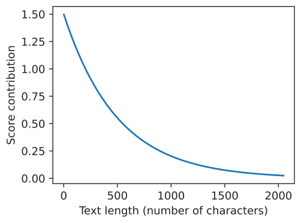

5.3Scoring LLM responses with a rule-based score
In the previous section, the LLM generated two correct responses. In this section, we’ll develop a simple rule-based scoring function to compare them, as illustrated in figure 5.4.

The rule-based scoring function will assign a score to each of two LLM responses (see figure 5.5), which will allow us to rank them and select the better one. Here, “better” refers to format and brevity, not correctness.
There are several ways to implement a scoring function (scorer) for evaluating responses, as shown in figure 5.5. The scorer can be heuristic, meaning a simple rule-based method. It can also be another LLM that rates the answers, often referred to as LLM-as-a-judge (see appendix F). It can also rely on internal probability scores or likelihoods, which we will explore later in this chapter.
In this section, we’ll begin with a heuristic, a rule-based scorer, implemented in listing 5.3. We begin with this version not because it is the most sophisticated option, but because it gives us a simple baseline that will make the later probability-based scorers easier to compare and reason about.

from reasoning_from_scratch.ch03 import extract_final_candidate
import math
def heuristic_score(
answer,
prompt=None,
brevity_bonus=500.0,
boxed_bonus=2.0,
extract_bonus=1.0,
fulltext_bonus=0.0,
):
score = 0.0
cand = extract_final_candidate(answer, fallback="none")
if cand:
score += boxed_bonus else:
cand = extract_final_candidate(answer, fallback="number_only")
if cand:
score += extract_bonus
else:
cand = extract_final_candidate(
answer, fallback="number_then_full"
)
if cand:
score += fulltext_bonus
score += 1.5 * math.exp(-len(answer) / brevity_bonus)
return scoreThis heuristic_score function assigns a numerical score to an LLM answer based on how cleanly the answer can be extracted and on the answer’s length. For instance, we award a bonus if the answer has a \boxed{} response (boxed_bonus). Otherwise, we give a smaller bonus if it contains at least a number (extract_bonus). The brevity_bonus assigns points based on how short the answer is.
The absolute values are not very important. What matters more is their relative scale. Here, boxed_bonus=2.0 is intentionally larger than extract_bonus=1.0 so that a cleanly boxed final answer is preferred over one where we can only extract a number. The brevity term contributes at most 1.5 additional points, so it mainly helps to break ties between answers of similar quality rather than dominating the extraction bonuses. We also keep fulltext_bonus=0.0 so that arbitrary long-form answers are not rewarded unless we can extract a clearer final candidate from them.
The prompt argument is a placeholder that doesn’t serve a purpose in the function, but it will make life easier (and the code simpler) when we develop a self-refinement function with swappable scorer plugins later in the chapter.
Although brevity_bonus=500.0 may appear high, it is used as an exponentially
decaying term via 1.5 * math.exp(-len(answer) / brevity_bonus). The following plot,whose results are shown in figure 5.6, illustrates the effect of the brevity_bonus on the score.
import matplotlib.pyplot as plt
def plot_brevity_curve(brevity_bonus, max_len=2048):
lengths = torch.arange(1, max_len)
scores = 1.5 * torch.exp(-lengths / brevity_bonus) plt.figure(figsize=(4, 3))
plt.plot(lengths, scores)
plt.xlabel("Text length (number of characters)")
plt.ylabel("Score contribution")
plt.tight_layout()
plt.show()
plot_brevity_curve(500)The score bonus approaches 1.5 for shorter answers, while answers longer than
1,000 characters receive a bonus of 0.2 or less. A response of a few hundred characters corresponds to a short paragraph or a concise worked solution, whereas 1,000 characters or more usually means a fairly long, multisentence explanation. This term mildly favors compact answers, but it does not force the model to collapse everything into a one-line response.

For simplicity, the brevity bonus is coma smaller score contribution.
puted using the number of characters rather than the number of tokens, which avoids passing the tokenizer to the scoring function. Using token counts would also be reasonable and may even be preferable.
We can now apply the heuristic scorer to the first (longer) response from section 5.2:
print(round(heuristic_score(response_1), 3))The resulting score is 2.088. Next, let’s try the second (shorter) response:
print(round(heuristic_score(response_2), 3))The computed score is 2.517, which means the second (shorter) response would be the preferred answer.
You’ve now seen the basic idea of scoring methods. Later in the chapter, we’ll develop another scorer and return to the heuristic scorer as part of the self-refinement method.
Exercise 5.1: Using the heuristic scorer as a tiebreaker in self-consistency
self_consistency_vote) in the previous chapter (listing 4.17) so that it can handle ties among candidate answers. For instance, when two or more answers receive the same number of votes, apply the heuristic scorer (heuristic_score) from this section to the tied candidates, and select the one with the highest score. Tip: You don’t need to modify the self_consistency_vote function results dictionary returned by self_consistency_vote.